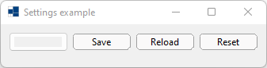
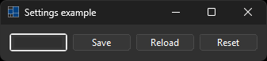
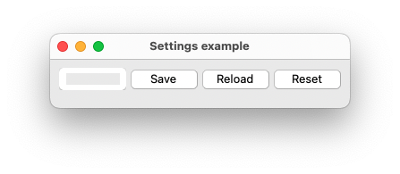
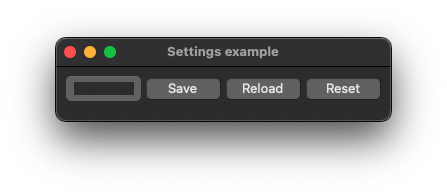
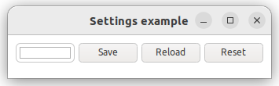
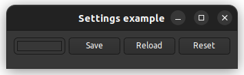

|
xtd
0.2.0
|
Loading...
Searching...
No Matches
application_settings.cpp
demonstrates the use of xtd::settings component with CMake setting commands.
- Windows
- 

- macOS
- 

- Gnome
- 

#include "../properties/settings.hpp"
#include <xtd/forms/application>
#include <xtd/forms/button>
#include <xtd/forms/color_picker>
#include <xtd/forms/form>
using namespace application_settings::properties;
using namespace xtd::forms;
auto main() -> int {
auto back_color_picker = color_picker::create(main_form, main_form.back_color(), {10, 10}, {75, 25});
back_color_picker.color_picker_changed += [&] {
main_form.back_color(back_color_picker.color());
};
save_button.click += [&] {
settings::default_settings().size(main_form.client_size());
settings::default_settings().location(main_form.location());
settings::default_settings().back_color(main_form.back_color());
settings::default_settings().save();
};
reload_button.click += [&] {
main_form.client_size(settings::default_settings().size());
main_form.location(settings::default_settings().location());
main_form.back_color(settings::default_settings().back_color());
back_color_picker.color(settings::default_settings().back_color());
};
reset_button.click += [&] {
settings::default_settings().reset();
reload_button.perform_click();
};
reload_button.perform_click();
application::run(main_form);
}
static void run()
Begins running a standard application message loop on the current thread, without a form.
static color_picker create()
A factory to create an xtd::forms::color_picker.
@ location
Specifies that both the x and y coordinates of the control are defined.
Definition bounds_specified.hpp:30
@ size
Specifies that both the width and height property values of the control are defined.
Definition bounds_specified.hpp:36
@ text
The xtd::forms::status_bar_panel displays text in the standard font.
Definition status_bar_panel_style.hpp:25
@ manual
The position of the form is determined by the Location property.
Definition form_start_position.hpp:24
The xtd::forms namespace contains classes for creating Windows-based applications that take full adva...
Definition texts.hpp:219
Generated on Wed Jul 2 2025 10:21:24 for xtd by Gammasoft. All rights reserved.